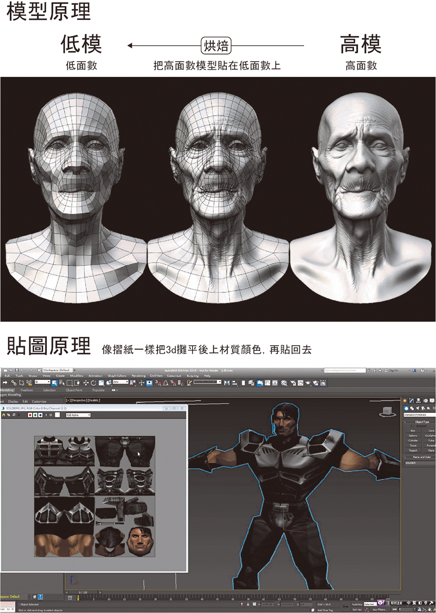
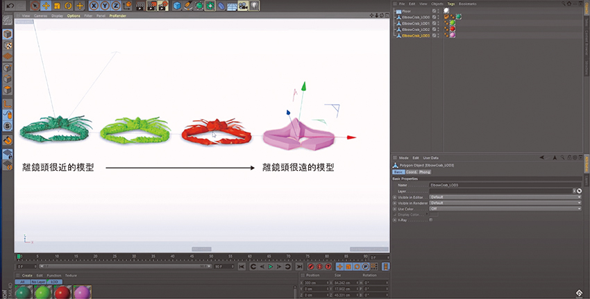
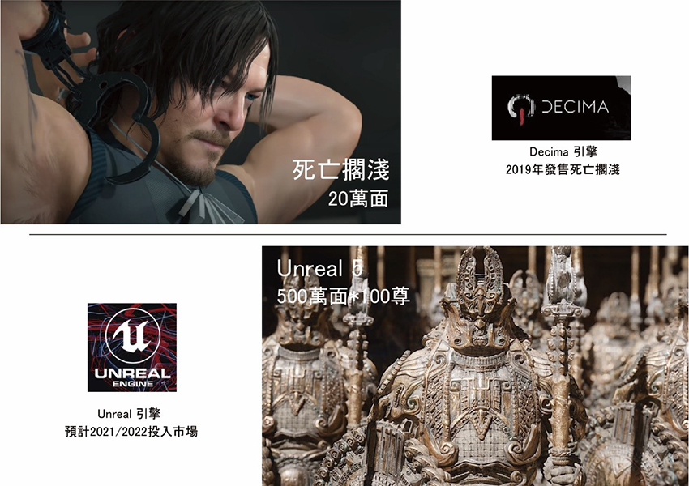
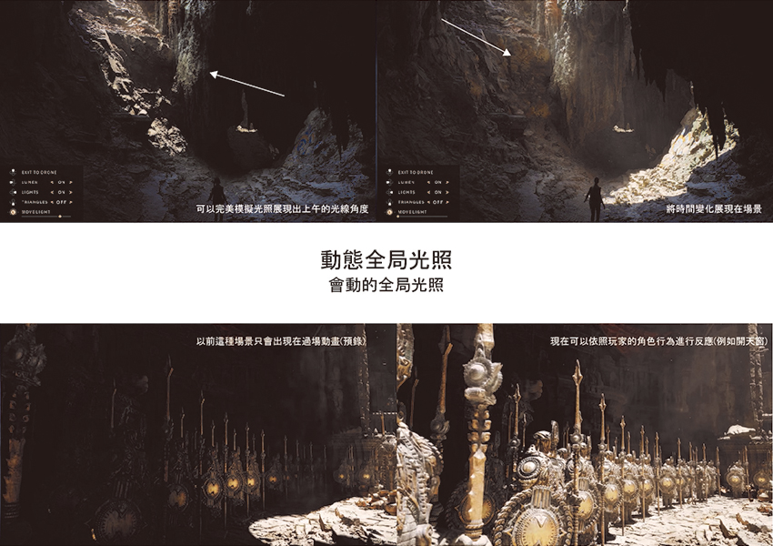
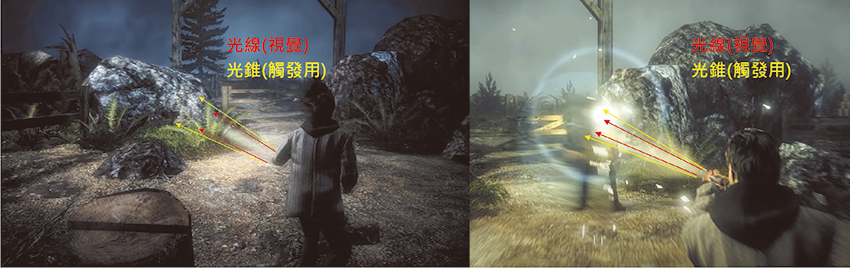
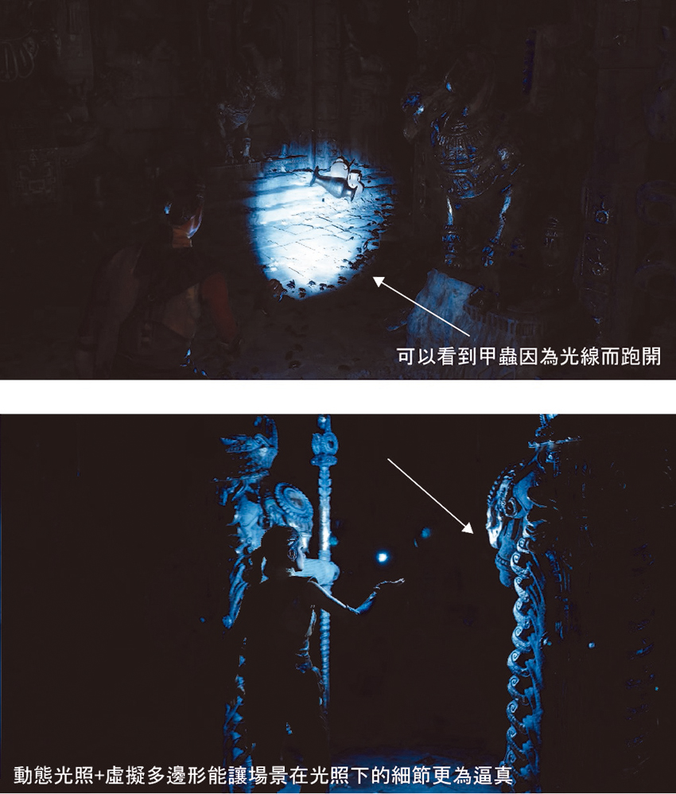
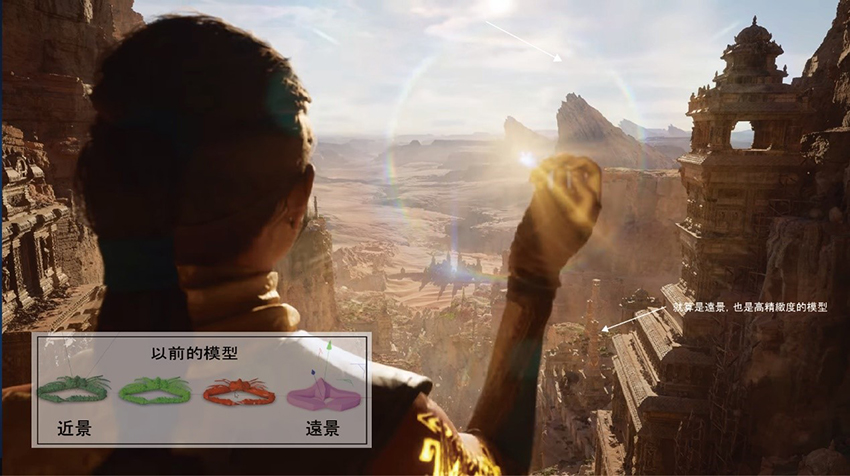

若是平常有在玩遊戲或是對於AR/VR有研究，一定會知道Unreal engine以及Unity。這兩款軟體基本上就是構築出遊戲世界/虛擬世界中所有的一切的根本，本身建模或許不是特別出色，主要在於「整合」各種所需要的元件，例如從別的軟體構置完成的模型/貼圖/特效/動作/表情。
這兩個軟體在運算上各有優缺點，所以很常看到遊戲在販售時會強調以「XX引擎製作」原本勢均力敵的兩家主力公司，在2020年5月時被Unreal率先打破了這個平衡。最新釋出的新世代引擎Unreal5完全顛覆了日常對於引擎限制的想像，差不多是從馬車到跑車的進化程度。 在介紹一下進化之前，必須要先了解當代技術的限制以及目前為止的解決辦法。模型原理如圖所示，基本上越細緻的模型越吃電腦效能，尤其在3A大作上的遊戲為了要讓角色更寫實更精緻，面數的提升更為明顯。
|  |
但與此同時就遇到一大難題：面數。一款遊戲裡面有很多東西都需要細節，除主角之外例如不同的裝甲、武器、道具、樹、草、建築物及房間等等的，不可能無限制地在主角身上向上增加面數。所以基本上遊戲效能體現都會被當代大環境所影響。為此還特地產出了所謂鏡頭遠近調校的功能，亦即越近的模型越精緻，越遠的越粗糙。
|  |
說了這麼多，終於可以進入今天的正題：Unreal Engine 5，這次的版本佚代更新讓設計師再也不需要擔心面數問題，可以無限制的刻畫細節！
1. 虛擬多邊形系統
目前尚未解釋何謂虛擬多邊形，但為了展示其效能，在展示影片中放入了一尊大概就幾百萬面的雕像共100尊(作為比例，當代最高及遊戲主角面數為大約20萬面) 。真實的多邊形有很多的好處，例如當環境光照到物體時能呈現更真實的反射以及折射，也可以讓場景增加很多真實性例如刮痕、傷口等等的狀態都能以真實的3D呈現(目前都是2D貼圖模擬)
|  |
2. 動態全局光照
| 由兩點來解釋： | |
| (一) | 目前的技術在遊戲中不難發現，場景大部分都是「固定時段」，例如這個章節是白天或是黃昏，頂多是在切換場景時才會進行更動。會造成這樣的原因是因為通常遊戲中的光源是已經預先烘焙在物件上面(把照光後的結果畫上去)，是無法更動的→全局光照。 |
| (二) | 但有些部分還是能看到物件陰影會因為光源位置改變而有反應、例如路燈、手電筒、槍口噴濺火光等等則是因為在不能動的全局光照下，增加了動態光照讓環境中的物體也會因為光有反應，小量光照下電腦效能還支撐得下去。 |
|  |
3. 光線系統
以前的世代，光線就是光線並不能與場景中的物件互動，可以照明但不能觸發事件。目前的做法是在光線的產生區域製作一個看不見的多邊形當成反應區，所以仍舊是物件與物件反應，而不是光線與物件反應。
|  |
新世代的光線已經直接成為觸發器，這樣的好處是例如在玩殭屍遊戲的時候，你可以利用各種不同的細小道具造成反射，進而達到驅趕的效果( 現階段的光錐是不會連反射都做出來)例如手持鏡子小碎片，打火機火光甚至是眼球的反光都有效。將此技術實際應用上遊戲，將會大大提升娛樂性及動腦的程度。
|  |
4. 鏡頭遠近調校
在虛擬多邊形的幫助下，已經不需要像以前一樣讓遠景的模型簡化，而是可以讓整個場景都保持在一個非常精緻的狀況。
|  |
總體而言，Unreal Engine 5 已經展示出了即將統治3D領域的實力以及野心。以往讓設計師們頭痛的問題將不復存在。雖然以上的文章一直是討論遊戲上的發展，但實際上而言是可以應用到更多的領域，搭著5G網路的進步，往後AR/VR技術全面普及的時代或許也即將來臨。